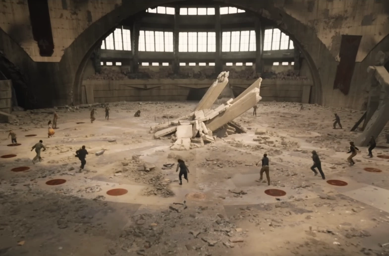
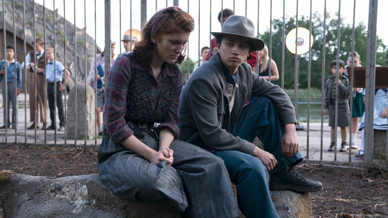
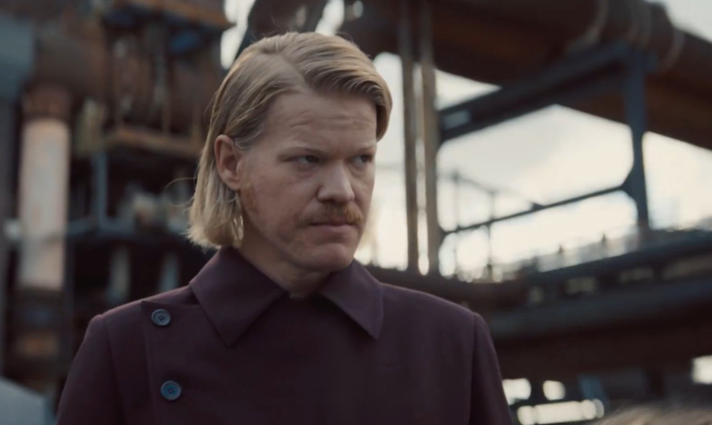
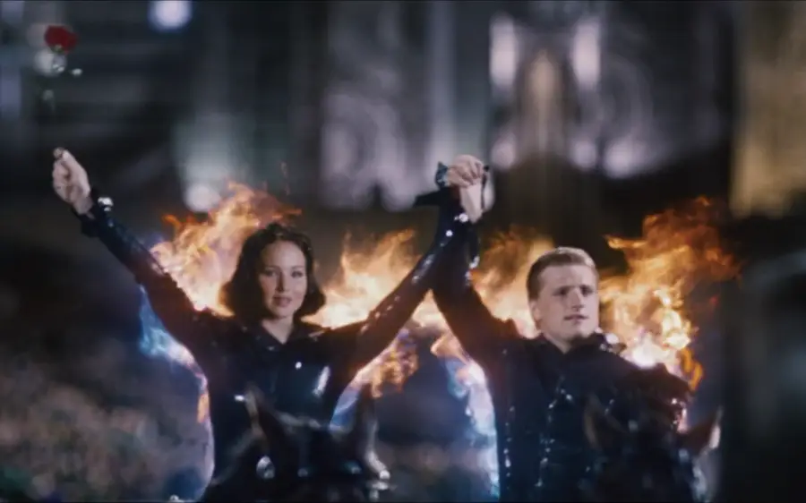
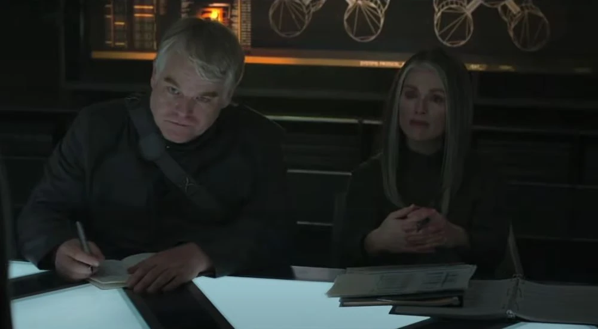
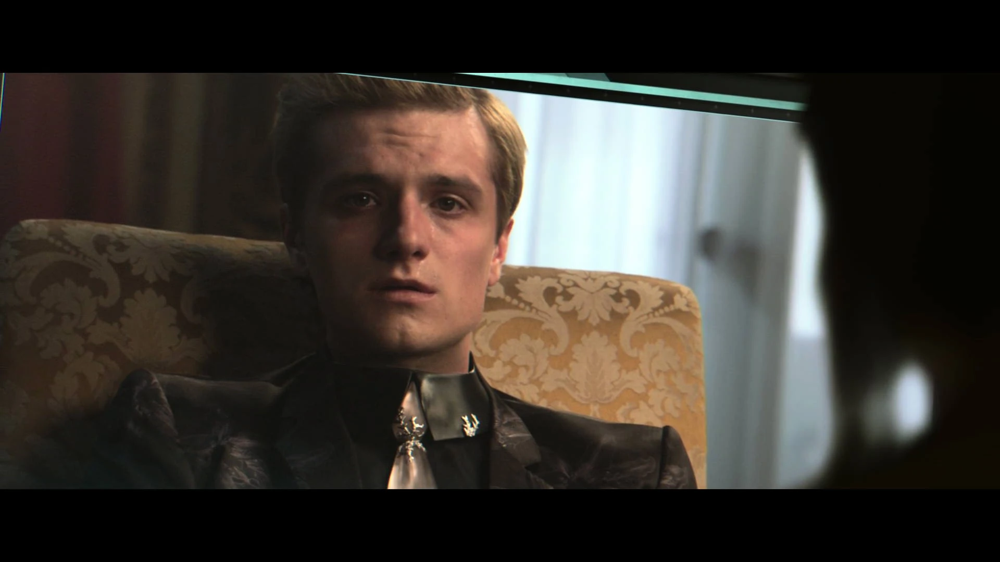

Timeline of Hunger Games propaganda
This is an analysis of how propaganda in Panem evolved over time and shaped the events of the series, beginning with the Hunger Games used as a strategy by the Capitol to dominate the country and ending as a tool used by both President Snow and President Coin to advance both of their sides during the war. As we will see, both have devastating effects and raise the question of whether or not propaganda can ever be used for "good," at least in this franchise. (ADD stands for "After Dark Days.")Contents:
Stage 1: The Games' Creation, 0-10 ADD
Immediately following the Dark Days (before Snow's rise to power), the Capitol's use of propaganda was somewhat limited in comparison to how it is seen used later on. This directly mirrors the Games themselves, which aren't the same elaborate spectacle we see in the original novels and films; rather, the arena is crude, the cameras aren't as functional, and it takes place inside a constructed building rather than being integrated fully into the landscape.
At this point in time, the gamemakers have not fully realized the potential of the Hunger Games as visual media and how they can serve as propaganda representing the Capitol's might and dominance over a crumbling landscape. Instead, it is little more than a punitive yearly ritual. As a result, viewership of the Games is dwindling.
Take the arena for instance: The image of a dilapidated, almost empty ampitheater half-destroyed by a bombing doesn't exactly inspire confidence or awe.
The tributes themselves are also not yet transformed into the "propaganda" we see later in the series; instead, in The Ballad of Songbirds and Snakes, they are caged in a zoo and are not made to put on an elaborate performance with costumes in front of a large crowd.
Snow takes advantage of this weakness in his rise to power by proposing the Games be transformed into a much bigger spectable with audience members growing more attached to the contestants.
Stage 2: The Rise of Snow & Plutarch, 10-73 ADD
The above video does an excellent job of analyzing President Snow's role in transforming the tributes into Capitol propaganda, specifically focusing on Haymitch in Sunrise on the Reaping. He points out that the following two quotes at the beginning of the novel summarize the message that Suzanne Collins wants to send about propaganda as a whole:
"All propaganda is lies, even when one is telling the truth. I don't think this matters so long as one knows what one is doing, and why." -George Orwell
"A truth that's told with bad intent beats all the lies you can't invent." -William Blake
The speaker argues that in this period of Panem's history, Snow used propaganda as a means of promoting the idea that the Capitol is strong, when in fact it was quite weak. This is similar to strategies used by Mussolini and other dictators.

On the flip side, we see the rise in power of Plutarch Heavensbee, a member of District 12's media team. He clearly understands the power of propaganda very well--perhaps even better than Snow--because he works behind the scenes so often, to his own advantage. He has this to say to the tributes in the novel:
“From the Capitol’s perspective, the Games are the best propaganda we have. You tributes, you’re our stars. You carry it out. But only if we control the narrative. Don’t let us.” (197)
Here, it's emphasized how Snow's strategy of controlling the tributes has transformed the Games into a key part of Panem's propaganda because of the way they are forced to "perform" a certain way at all times. He encourages Haymitch to break these rules in order to resist control.
Unfortunately, in Sunrise on the Reaping, this strategy doesn't work; when people overtly refuse to conform for how President Snow wants them to act (like Lenore Dove refusying to cry on camera), he has them killed. However, Haymitch takes what he's learned and eventually uses it to help Katniss break free of this control.
Stage 3: The 74th Games & Sparks of Rebellion, 74-75 ADD
By the time the 74th Hunger Games arrives and the main trilogy begins, the Capitol's control over how it is perceived is at an all-time high. After they are reaped, Katniss and Peeta quickly become the Capitol’s newest media commodities.
The “Girl on Fire” moment is one of the clearest examples of high-production propaganda in Panem’s history. Cinna transforms Katniss from a powerless District 12 tribute into a Capitol spectacle, turning her into a symbol the Capitol believes it can control. In doing so, he inadvertently lays the foundation for her later transformation into an icon of the rebellion--but is also able to take the blame for it all.
The Capitol’s interviews—especially those conducted by Caesar Flickerman—show how the Games manipulate public emotion in more subtle ways. The interviews with Katniss (especially those with her post-"engagement" to Peeta) subtly reinforce her as "performing not-performing" femininity, as well as the idea that everyone can or should be like her. Certainly this seems to work, since Katniss is told by a little girl that she will volunteer for the Reaping just like she did.
This is in stark contrast to filming the reaped in a zoo as if they are literally animals who cannot be spoken to. These highly polished broadcasts help the audience connect with tributes on a personal level, which amplifies the emotional impact of their deaths and enhances the Games’ political power.
The Gamemakers’ technological sophistication also reaches a new level because they now incorporate the Games into the landscape itself, thus turning the natural world into a kind of propaganda. The arena of the third Quarter Quell is an especially powerful example. This kind of designed landscape serves to emphasize the totality which the Capitol possesses control over the landscape, both physically and socially. As people watching the Games on TV would surely see the way the landscape is designed to look like a clock, they would be reminded that the Capitol's technological might is indomitable.
“They’re playing with me… just like they do with the arena.” The Hunger Games (142)
This quote encapsulates how integrated propaganda has become: the tributes, the audience, and the Capitol itself all participate in a curated performance. But Katniss and Peeta disrupt this system by creating their own narrative—one the Capitol cannot easily contain.
Stage 4: Mockingjay & Rebel Propos, 75-76 ADD
By the time of Mockingjay, the Capitol no longer has a monopoly on media. District 13 under President Coin launches its own propaganda campaign, using Katniss as the face of the rebellion, Plutarch as the strategist, and Beetee as tech support, able to hijack Capitol media and insert messages from the rebels.
District 13’s “propos” demonstrate how rebellion exploits the same techniques the Capitol once used—including dramatic staging, emotional storytelling, and carefully selected imagery—to undermine Snow's authority. Katniss's broadcast from District 8, where she delivers the “If we burn, you burn with us” speech, becomes the rebellion’s most impactful piece of media.
However, these propaganda pieces arguably exploit the suffering and death of innocent civilians to advance the rebels' (and Coin's) goals. This raises an important question: Is propaganda ever really ethical?
Snow counters this with Capitol-controlled broadcasts featuring hijacked Peeta. He uses his classic tactic of turning people into propaganda (which he used on Haymitch and attempted to use with Katniss, though the rebels eventually claimed her as their own propaganda). His psychological torture and misinformation campaigns show the lengths the regime will go to retain control. These broadcasts represent propaganda at its most destructive: weaponizing a beloved character to destabilize the rebellion’s figurehead.
However, it also demonstrates the Capitol's control over the media beginning to slip. Beetee is able to insert the rebels' own propaganda--Katniss singing "The Hanging Tree," which was used as a rallying cry by rebels who attacked a Capitol dam. This allows Peeta to temporarily break free and warn the rebels of a Capitol attack before the broadcast ends. It also represents the soundscape being used as propaganda, which the Capitol may not have expected due to its constant reliance on visual media.
The stark contrast between District 13’s raw and urgent yet personal messages and the Capitol’s polished but increasingly desperate broadcasts marks the collapse of Snow’s once-dominant media structure. The propaganda war becomes a reflection of the political war: fragmented, unstable, and ultimately unsustainable.
“The truth is powerful… but it can be used for either side.” Mockingjay (258)
In the final days of the war, both sides rely on propaganda, and both manipulate the truth. The fall of the Capitol marks not just a political shift but an information one—proving that whoever controls the narrative, controls the world of Panem.
The message Suzanne Collins seems to be sending with her depiction of propaganda and its evolution in the series--from a weapon used exclusively by the Capitol in the Hunger Games, to a counterweapon used by President Coin in getting people to join her cause--is that it is irrevocably harmful in the way that it it affects and twists people and their words. Whenever Katniss agrees to be the pawn of someone else, rather than act for herself, she is harmed in some way. When Snow controlls her as a victor, she is forced to put on a facade of "true love" towards Peeta that diminishes the feelings she has for him and drives a wedge between her and Gale. When she agrees to wear costumes designed by Cinna, her friends are harmed. And when Coin uses her in propos, a war ensues that results in the death of her sister. It is only when Katniss chooses to act for herself and kill Coin that all of Panem is free from this propaganda.
Ultimately, all propaganda is a lie--either outright, or a distortion or exaggeration of the truth. Through The Hunger Games, she argues that one can find freedom by refusing to conform to its rhetoric and messaging.